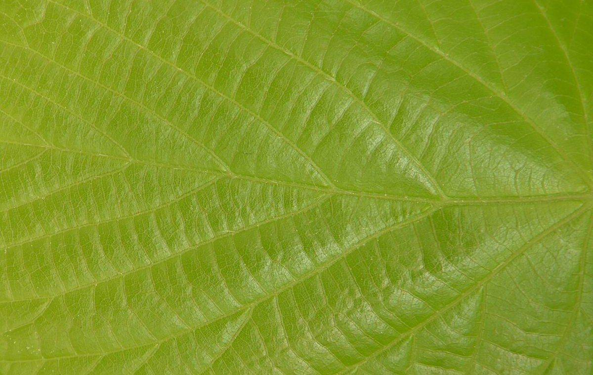
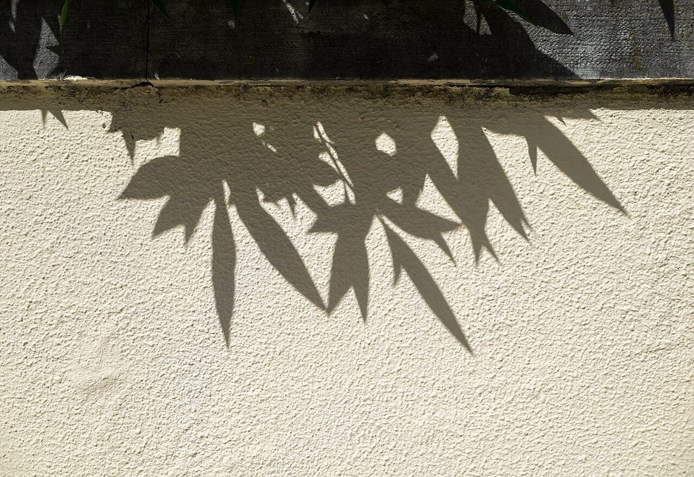
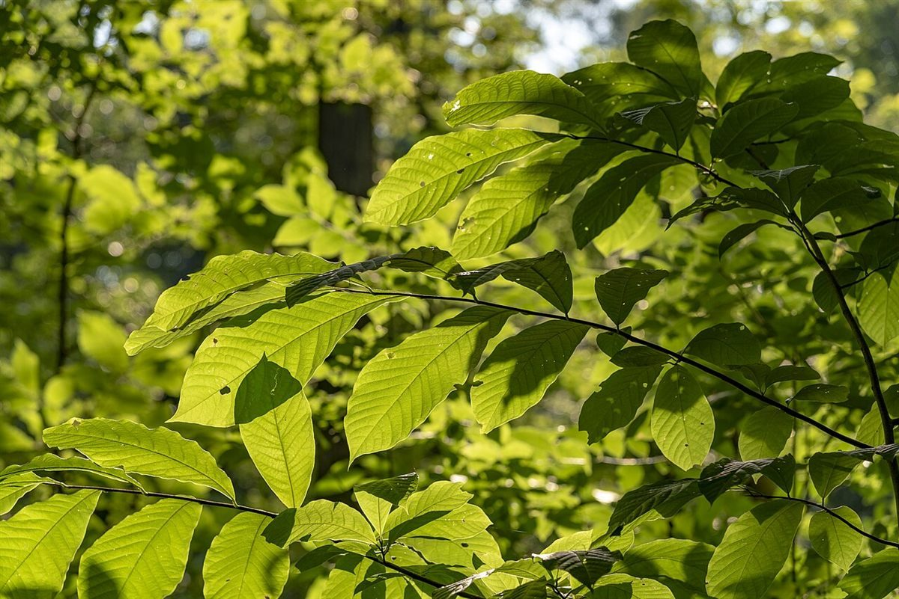
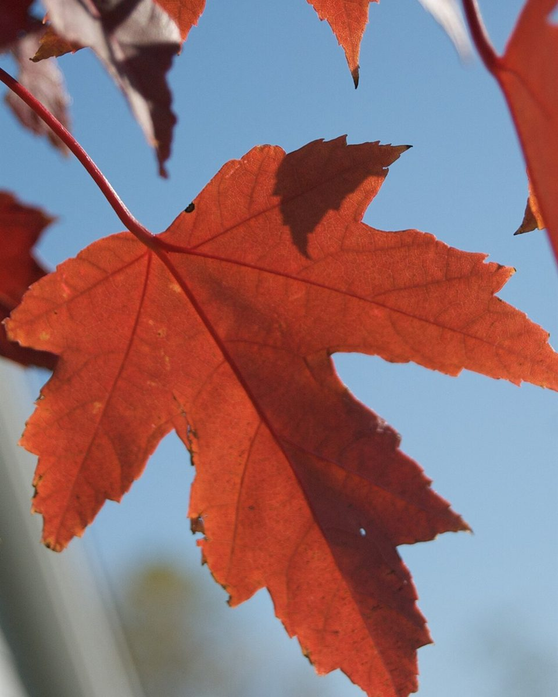
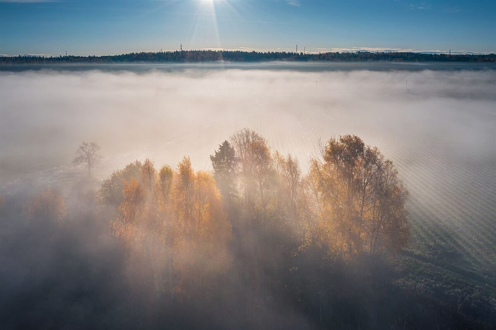
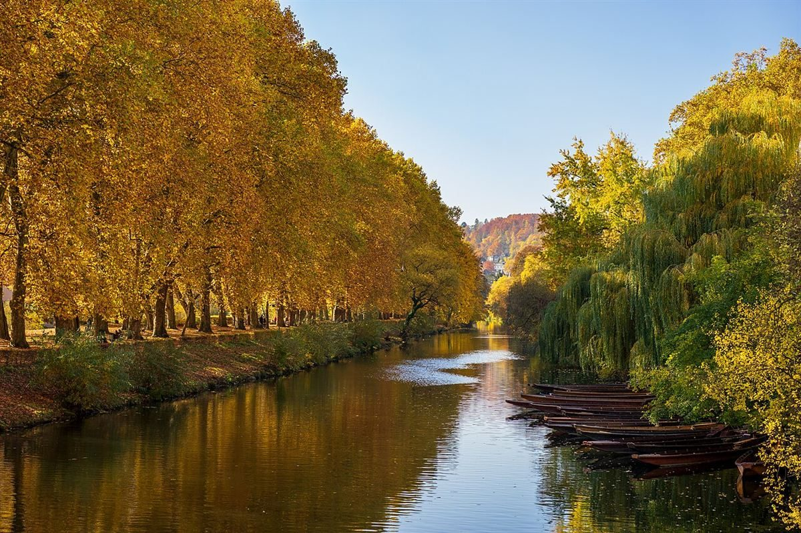
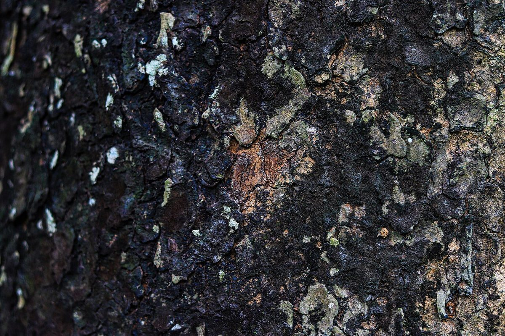
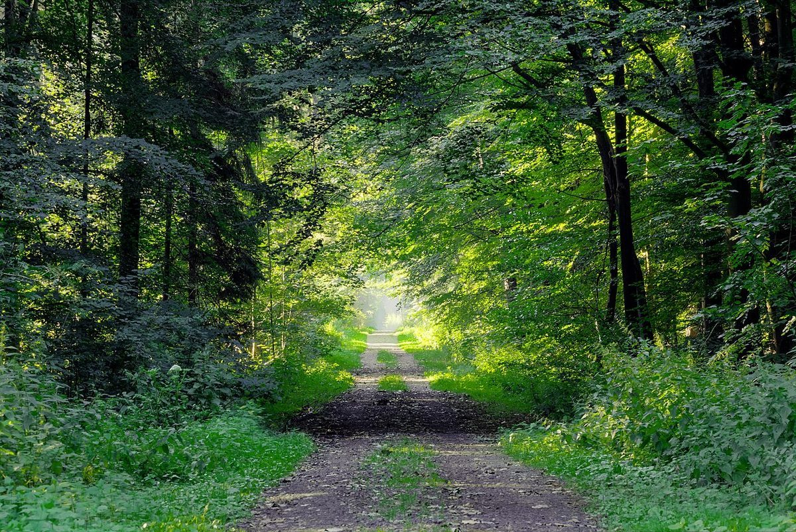
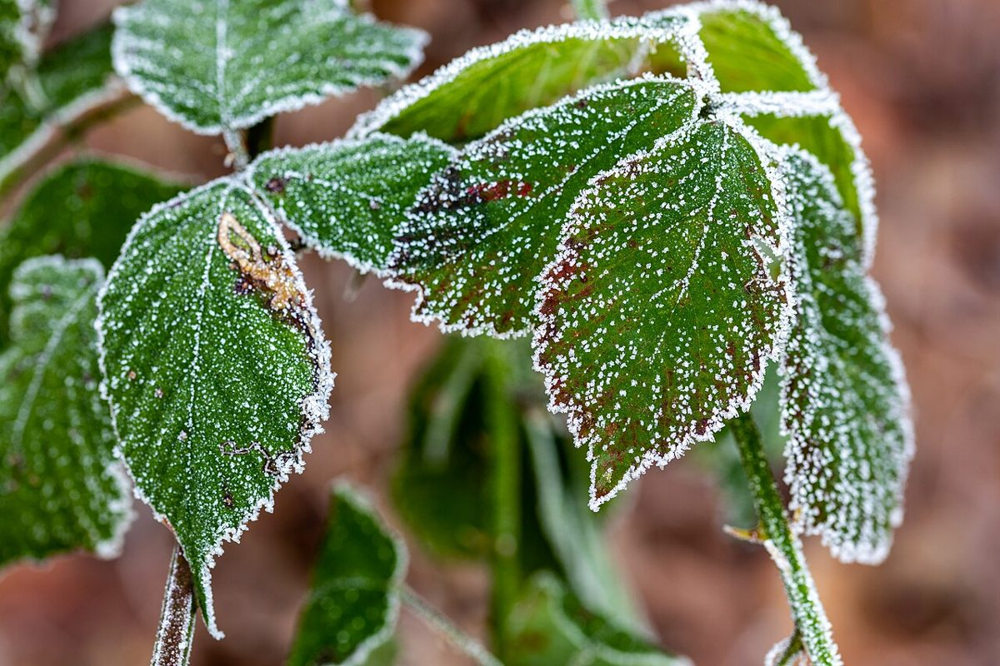

長野県木曽町福島・昭和レトロな喫茶店
受け継いだ空間で、
ゆっくり一杯を。
前のオーナーのこだわりが残る昭和レトロな空間を、若い店主が受け継ぎ、地域の新たな憩いの場にしていく喫茶店です。
お店の由来と想い
古い喫茶店の空気を、そのまま次へ。
百草スイーツの店舗紹介によると、プラタナスは木曽福島本町の商店街にある、歴史ある喫茶店です。以前のオーナーのこだわりが随所に残る店内を、現在は若い店主が空間と雰囲気を受け継ぎながら改装を進めており、「地域の新たな憩いの場」を目指しているとされています。開店当時から使われているレトロオーディオが今も現役で、温かみのある音を楽しめるとのことです。
以前の紹介記事(純喫茶ブログ)では、薄暗く雰囲気のある純喫茶の空間として、レースのカーテンやミッドセンチュリー風のオレンジ色の照明、テーブルに飾られた野花などが紹介されています。
情報源: 百草スイーツ(プラタナス)/わき道にそれて純喫茶2(当時の紹介記事)/Instagram
店名の由来は確認できていません。見出しの言い回しなど、上記の事実以外は制作側の表現です。


メニュー
喫茶も、食事も、甘いものも。
紹介記事などで触れられていた内容です。現在のメニューや価格は変わっている場合があるため、詳細は「準備中」とし、最新情報はInstagramをご覧ください。
情報源: 百草スイーツ










写真はフリー素材のイメージで、プラタナスの実際の店内・料理の様子ではありません。実際の写真は貴店ご提供のものに差し替えます。
口コミ
こんなふうに過ごしてもらえたら。
以下は、お店の雰囲気を想像して制作側が作成した「イメージ例」です。実在のお客様の声ではありません。
イメージ例
街歩きの途中に立ち寄りました。薄明かりの店内で、ゆっくりコーヒーをいただけました。
イメージ例
昔ながらの喫茶店の雰囲気が落ち着きます。流れる音楽も心地よく、つい長居しました。
イメージ例
食事もできると聞いて、お昼に寄ってみたいと思いました。地元の味を楽しめそうです。
ご案内
アクセス
| 所在地 | 〒397-0001 長野県木曽郡木曽町福島5129-ロ |
|---|---|
| 電話 | 準備中 |
| 営業時間 | 準備中 |
| 定休日 | 準備中 |
| SNS | Instagram @platanus_kiso |
掲載サイトにより番地の表記が異なるため、おいでの際はInstagramなどで最新情報をご確認ください。